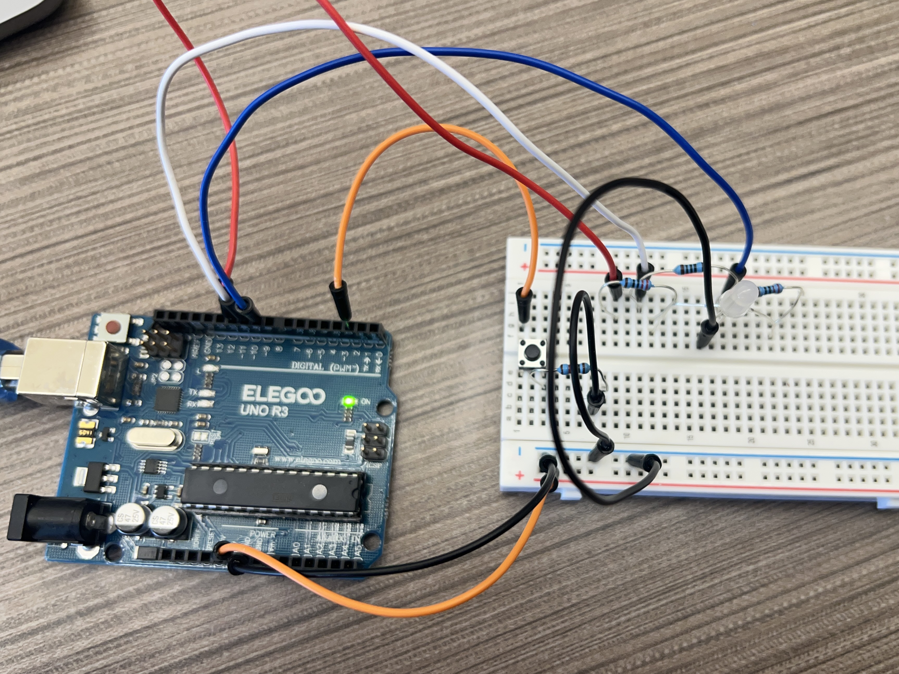
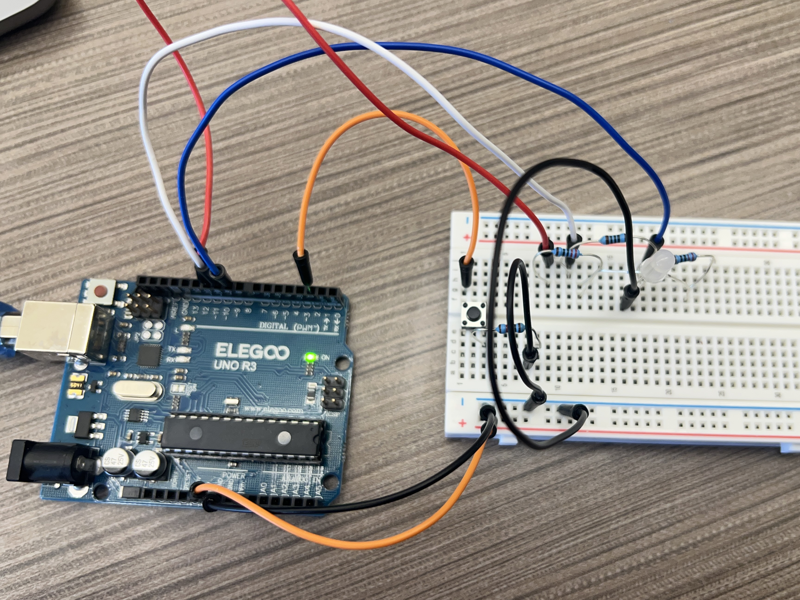

Circuit
 

Side view and top view of the circuit showing the RGB LED and pushbutton connections.

Each press of the button cycles the LED through its modes, starting from red and transitioning between green, blue, and a color fade.